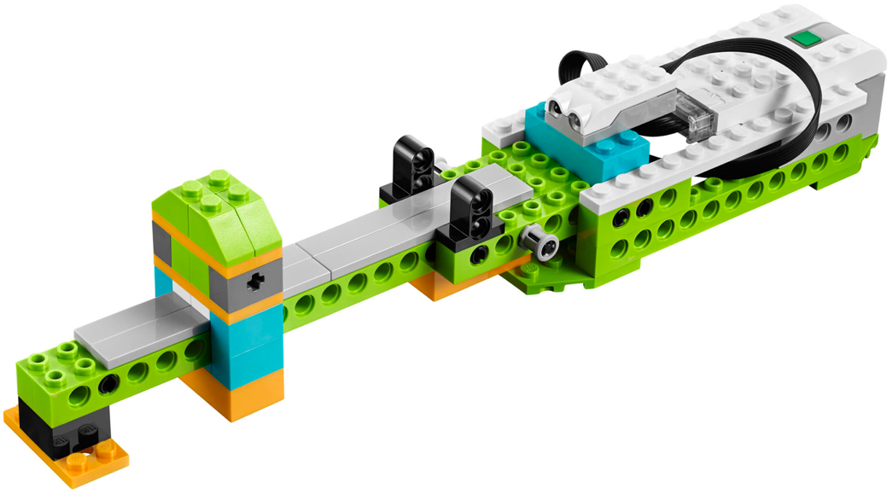
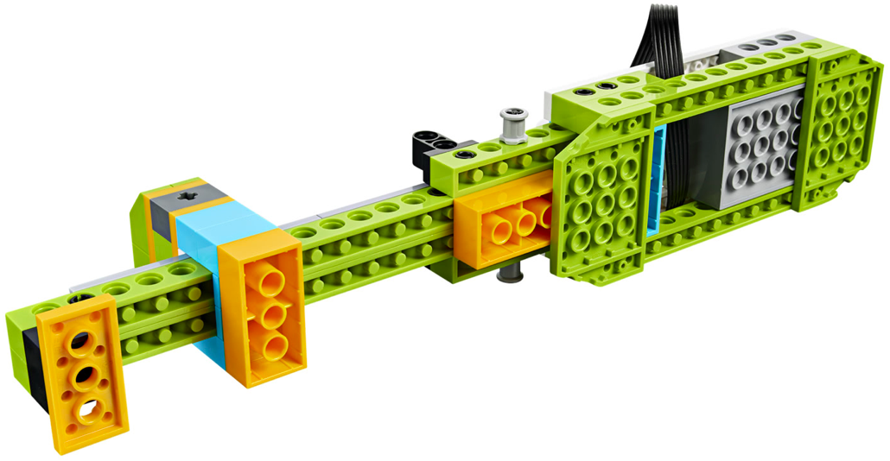
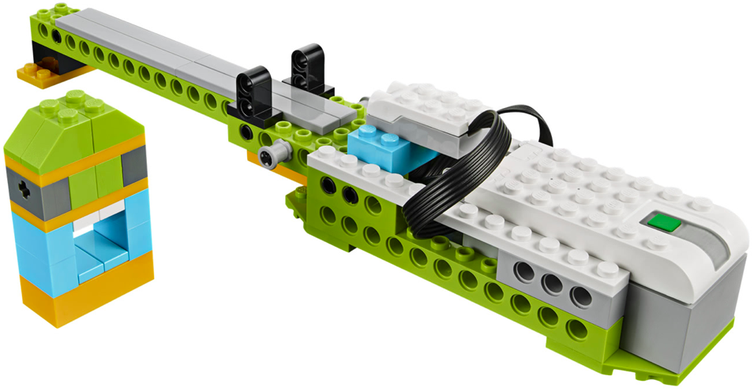
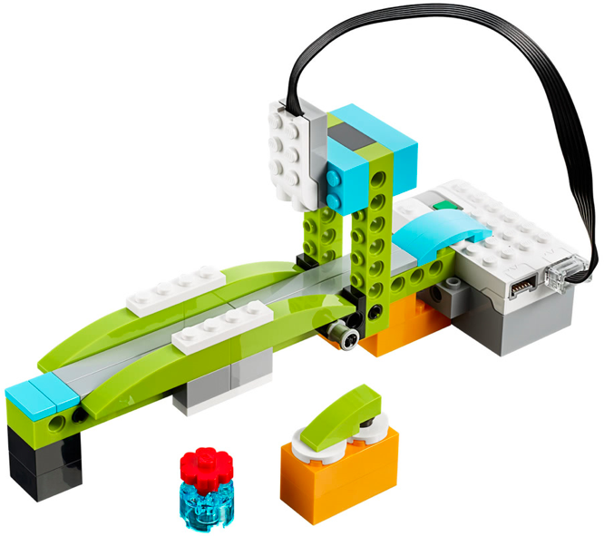
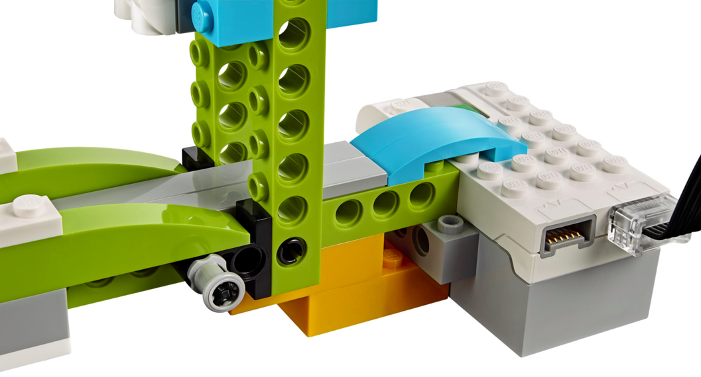
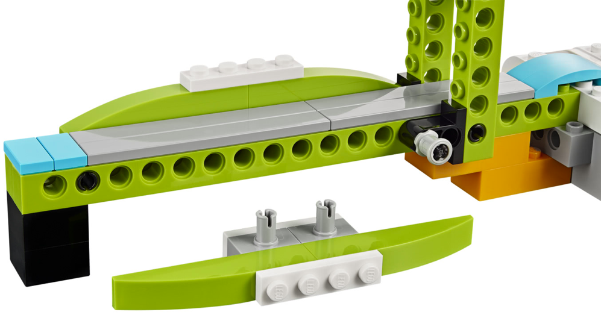

En este proyecto el alumno debe construir la base del los dos siguientes montajes. El alumno debe realizar una serie de retos iniciales para ver como se realiza el movimiento y como se traslada de un sitio a otro.
• El alumno debe quitar una pieza para que el mecanismo pueda moverse.
• Una vez hecho el paso anterior, el robot debe hacer un sonido cada vez que se mueva el mecanismo,
utilizando el sensor de proximidad.



• El robot debe hacer un sonido para cuando la pieza se aleja y otro diferente para cuando la pieza se
acerca, es necesario usar el sensor de proximidad en los modos correctos.
• Para este ejercicio montaremos el motor con una hélice y engancharemos esto al robot, una vez montado
usaremos la pieza que se acerca y aleja como potenciómetro para el ventilador, usando la distancia que
tiene en cada momento.



• Haremos que cada vez que pase un objeto bajo el arco, el robot emita un sonido.
• Repetir pero el robot debe esperar al sonido de una palmada para empezar a detectar.
{kind=link}
{kind=link}